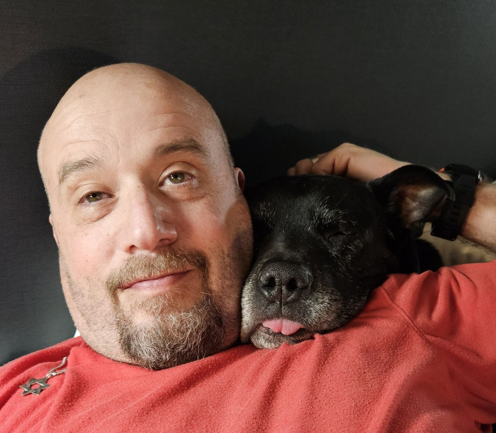

Building systems that align incentives better than we do. Decentralized governance, open infrastructure, and the elegant geometry of economic mechanisms. Forever questioning why things work the way they do.
Dark Web Pioneer · 2009 Bitcoin Miner · Builder · Investor · Kung Fu Practitioner
Building systems that align incentives better than we do. Decentralized governance, open infrastructure, and the elegant geometry of economic mechanisms. Forever questioning why things work the way they do.
Bio:
I walked away from a lucrative consulting position at Goldman Sachs to build The Farmer's Market — the anonymous online drug marketplace that ran for nearly a decade before anyone had heard of Silk Road. It started around 2003 as a Hushmail-and-mail-order operation and it was still running in April 2012, when the DEA came for me. I wrote the software, I ran it, and I scaled it to roughly 3,000 customers in all 50 states and 45 other countries.
The part nobody believes: it was a labor of love, and I barely made ends meet. About $2.5 million moved through the site over nine years — which stops sounding like a fortune once you divide it by nine, subtract everyone else in the chain, and notice that the person who built the whole thing had given up Goldman money to do it. We were a genuinely small operation. I wasn't in it to get rich. I was in it because I thought people should be able to transact without asking permission, and I turned out to be willing to find out what that costs.
I found bitcoin in 2009, the way you'd expect someone in my position to find it: I was researching better ways to move money. I started mining it. The client reported six peers on the entire network. I mined roughly 3,300 coins before the Slashdot story hit and the GPU farms arrived to eat every new block.
Then I decided not to accept it. I looked at it hard again once Silk Road started taking bitcoin, and the volatility made it unworkable — you cannot settle customer orders in an asset that moves thirty percent in a week. That was the correct call in 2011 and it looks completely insane in hindsight, which is roughly the shape of the entire story. I sold almost all of the coins, far too early, like everyone else who was actually there. I kept enough to be financially independent.
Around 2010, the DEA launched "Operation Adam Bomb". It took them 2 years, but they found us. I was charged as one of two organizers of a continuing criminal enterprise, and I served 63 months in federal prison (The CCE charge was dropped). I came out with the same question I went in with, pointed somewhere legal this time: how do you design a system where the incentives hold when nobody is in charge? That question is MarketDAO.

I'm actively booking interviews. Here's what I'm good for.
Pitches, bookings, and pre‑interviews:
marketdao@proton.meShort bio (free to use): Mike Evron mined bitcoin in 2009 and founded The Farmer's Market, the first dark web marketplace. After 63 months in federal prison, he now builds MarketDAO, a governance protocol with tradeable voting rights.
A novel governance mechanism where voting rights become tradeable during elections. One-token-one-vote measures who shows up; MarketDAO measures who cares and how much.
A PWA for QR-based contact exchange. Open standards-based with local-first data storage, extending the vCard format while maintaining compatibility.
A PicoLisp framework for building web applications. Building tools for thoughtful systems.
pabloescoberg comes from the Farmer's Market years — a combination of being treated like a Jewish Pablo Escobar and needing a handle that stuck. It stuck. It's the name I build under now, and I'm not interested in pretending it came from anywhere else.